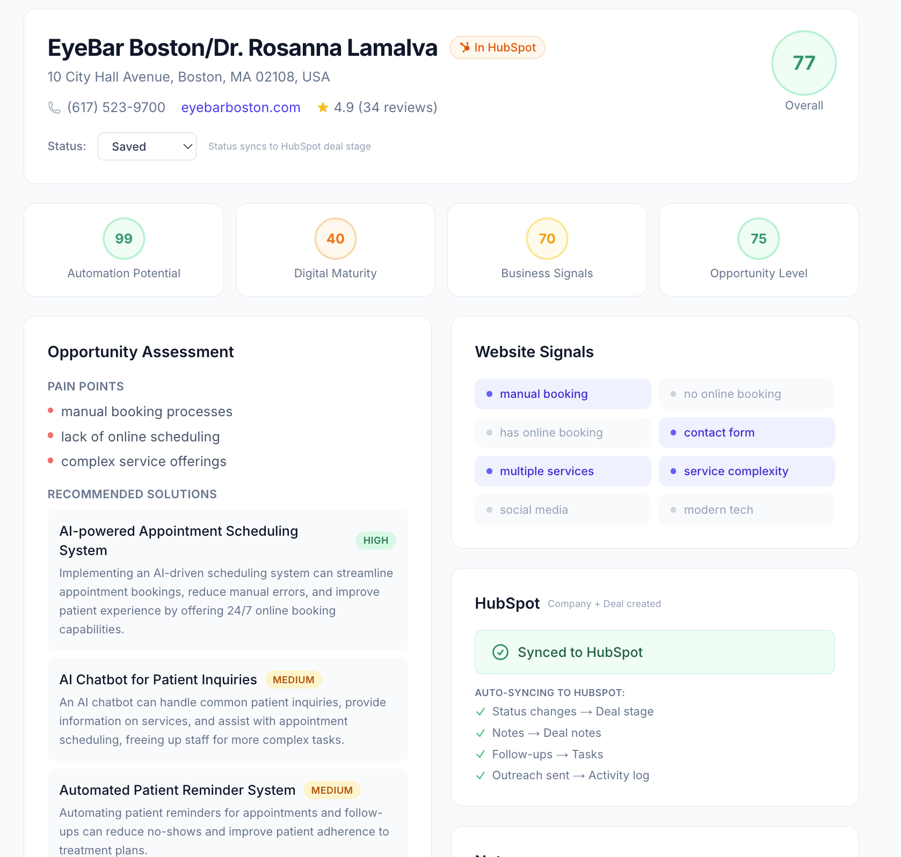
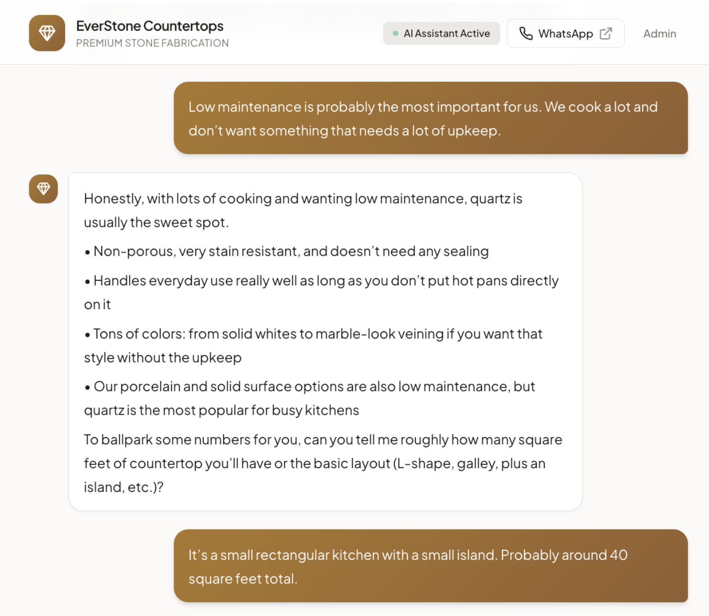
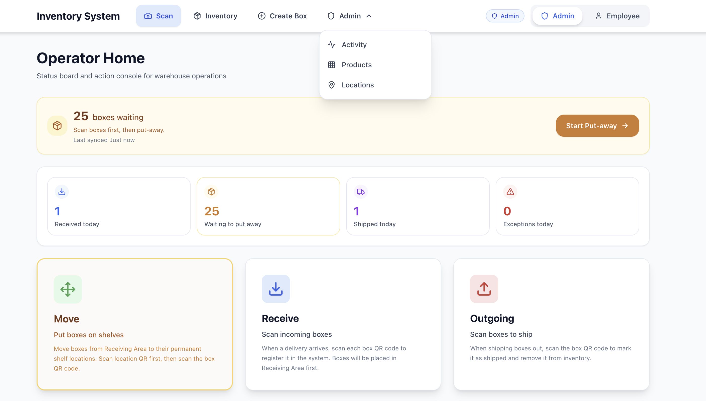
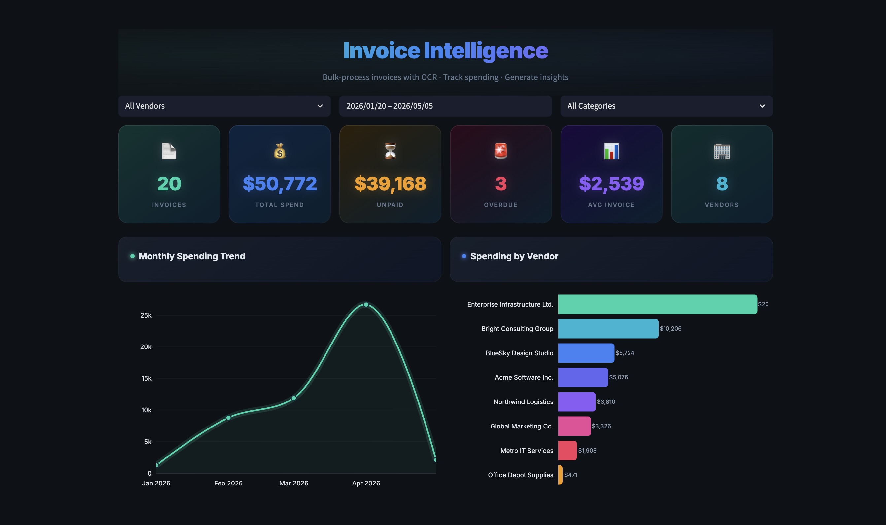
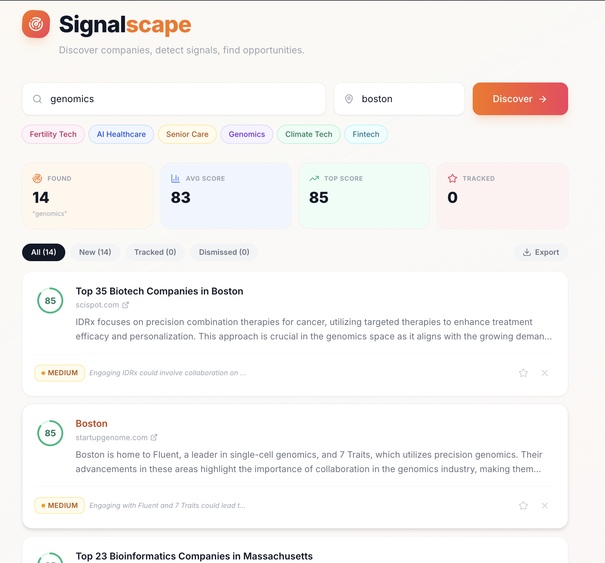
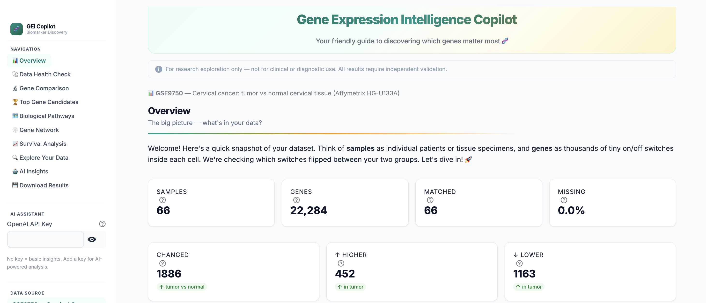

Cross-Platform FinTech Engineer
Datalogy Inc, RemoteBuilt a secure, cross-platform fintech transaction app for Android, iOS, and web with account authentication and end-to-end payment flows.
AI & Data Analytics Engineer
I build intelligent systems at the intersection of machine learning and business analytics, from automation-driven data platforms to real-time decision support tools.
Passionate About Digital Solutions · AI Agents · ML Pipelines · Bioinformatics
These days, I am building agents.
MS Business Analytics from Babson College. Previously at ReDiPath (AI/Digital Pathology) and Unity Enterprise (Business Intelligence).
I'm an Applied AI and Data Analytics professional with a passion for building end-to-end data systems.
From preprocessing pipelines for medical imaging to automated reporting dashboards for multi-location retail operations, my work sits at the intersection of machine learning engineering and business intelligence.
With a foundation in bioinformatics spanning genomics, proteomics, and computational biology, I'm drawn to domains where data complexity meets real-world impact.
I enjoy turning messy, unstructured data into systems that actually help people make better decisions.
Python, SQL, R, JavaScript, TypeScript, React Native, Expo
PyTorch, scikit-learn, XGBoost, Hugging Face, LangChain, RAG, Computer Vision
FastAPI, PostgreSQL, Supabase, REST APIs, Data Pipelines, Vector DBs, ETL/ELT
Tableau, Power BI, Streamlit, A/B Testing, Docker, AWS, GCP
Built a secure, cross-platform fintech transaction app for Android, iOS, and web with account authentication and end-to-end payment flows.
Developed reusable preprocessing and validation pipelines for large pathology imaging datasets to support CNN-based experimentation workflows. Performed exploratory analysis and structured data quality checks to improve dataset reliability. Prepared training and testing datasets, tracked validation metrics, and documented transformations, model assumptions, and performance observations with engineering and clinical teams.
Managed end-to-end analytics and reporting workflows across multi-pharmacy retail locations. Automated SQL-driven reporting pipelines connected to live dashboards, reducing manual effort and improving data reliability. Standardized data definitions, resolved inconsistencies, and performed routine QA checks. Built forecasting and trend analysis models for inventory planning and partnered with operations and marketing teams on process improvements.
Applied finance, marketing, and analytics concepts to develop a data-driven market growth strategy for India's lab-grown diamond industry, presented to industry experts.






Master of Science, Business Analytics
B.Tech, Bioinformatics & Data Science
I'm actively looking for AI/ML and Data Analytics opportunities for 2026. If you think we'd work well together, I'd love to hear from you.
Say Hello →